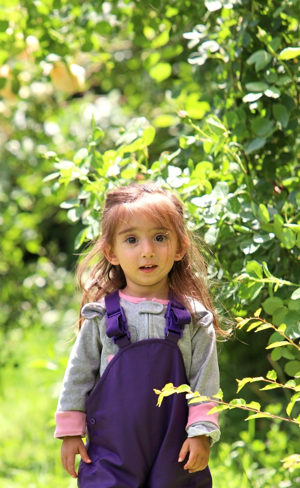

Загрузка AR системы...
Разрешите доступ к камере
Подготовьте фотографию девочки для сканирования
📷 Наведите камеру на ФОТОГРАФИЮ девочки (см. пример справа внизу)
Держите камеру стабильно на расстоянии 20-30 см
🔍 Ищу фотографию девочки...

▶️ Воспроизвести видео
×
Ваш браузер не поддерживает видео.